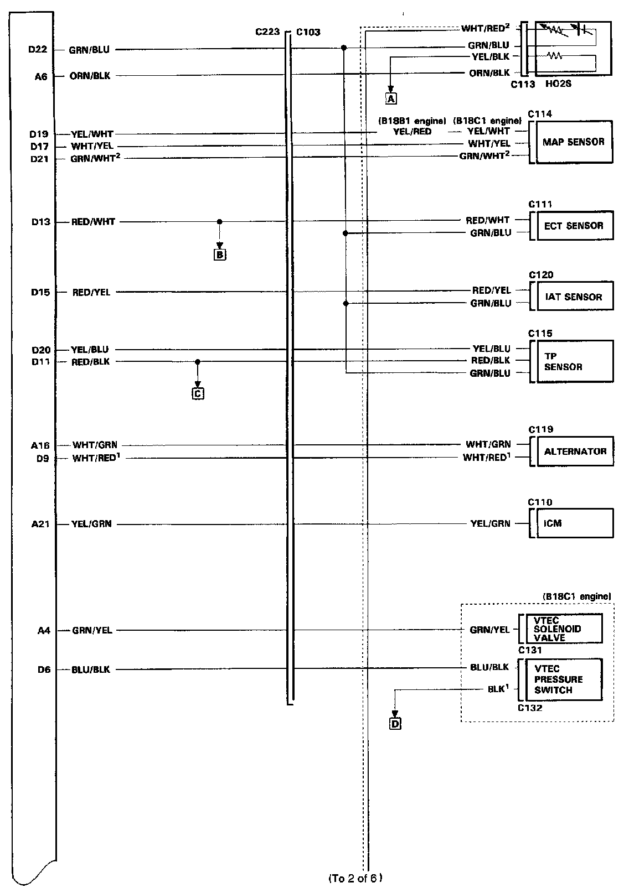
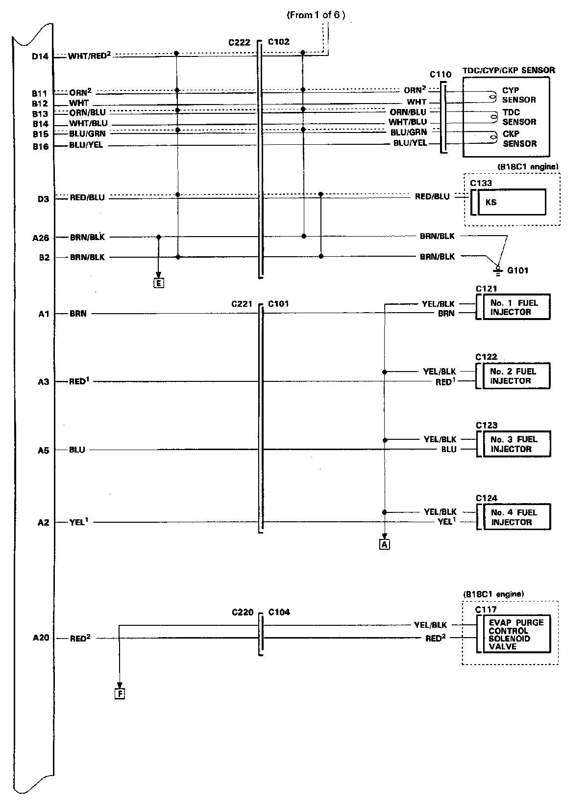
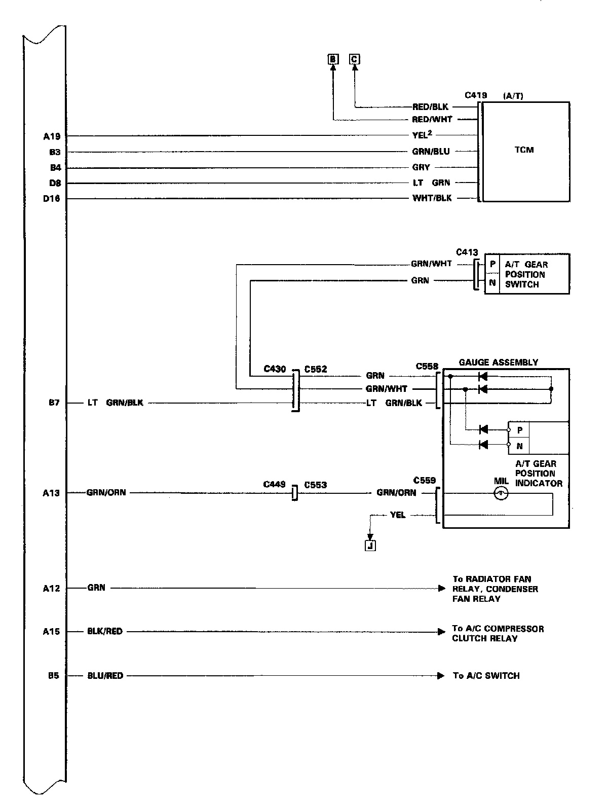

Control Unit Electrical Connections
Electrical Connections (1 Of 6):

Electrical Connections (2 Of 6):

Electrical Connections (3 Of 6):

Electrical Connections (4 Of 6):

Electrical Connections (5 Of 6):

Electrical Connections (6 Of 6):